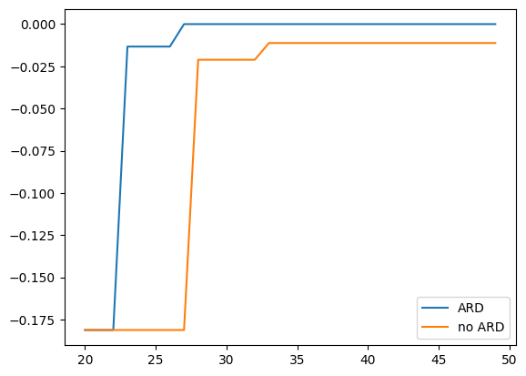

This jupyter notebook file is available at ISSP Data Repository (develop branch).
ARD (Automatic Relevance Determination) Tutorial
PHYSBO uses a Gaussian process (GP) as the surrogate model with a Gaussian kernel:
Here \(\lambda\) and \(\eta\) are hyperparameters representing the kernel scale and the input length scale, respectively.
With the ARD kernel, a separate length scale \(\eta_i\) is assigned to each input dimension \(i\). Learning these independently allows the model to automatically identify which dimensions matter for the objective and to optimize more efficiently.
In PHYSBO, you can enable the ARD kernel by passing the keyword argument ard=True to policy.bayes_search when running Bayesian optimization.
In this tutorial, we compare runs with and without ARD on a problem where only some dimensions affect the objective.
Import packages
Import the packages used in this tutorial.
[1]:
import numpy as np
import physbo
import matplotlib.pyplot as plt
Problem setup for this tutorial
We take as the objective the weighted sum of squared inputs:
With weight vector \(\vec{w} = [5, 1, 0, 0]\), the search space has \(D=4\) dimensions: \(x_0\) contributes most to the objective, then \(x_1\), while \(x_2\) and \(x_3\) do not contribute at all.
We prepare the candidate set as the point that attains the maximum, \(\vec{x} = \vec{0}\), plus \(N-1 = 999\) points drawn from a \(D\)-dimensional normal distribution.
[ ]:
N = 1000
weights = np.array([5.0, 1.0, 0.0, 0.0])
D = len(weights)
np.random.seed(137)
test_X = np.random.randn(N, D)
test_X[0, :] = 0.0
def simulator(actions: np.ndarray) -> np.ndarray:
X2 = test_X[actions, :] ** 2
return - np.einsum("ai,i -> a", X2, weights)
print("Search space shape:", test_X.shape)
Search space shape: (1000, 4)
Common parameters
We set the same seed and the same number of steps for both runs so that the effect of ARD can be compared fairly.
[3]:
n_initial = 20
n_bayes = 30
n_perm = 20
score = "EI"
seed = 31415
Case: ard=True
First, we run Bayesian optimization with ard=True. Because a length scale is learned per dimension, relevant and irrelevant dimensions can be distinguished more easily.
[4]:
print("=" * 60)
print("Running with ard=True")
print("=" * 60)
policy_ard = physbo.search.discrete.Policy(test_X)
policy_ard.set_seed(seed)
policy_ard.random_search(max_num_probes=n_initial, simulator=simulator, is_disp=False)
policy_ard.bayes_search(
max_num_probes=n_bayes,
simulator=simulator,
score=score,
ard=True,
is_disp=False,
)
best_fx_ard, best_actions_ard = policy_ard.history.export_sequence_best_fx()
best_x_ard = test_X[best_actions_ard[-1], :]
print("\nBest value (ard=True):", best_fx_ard[-1])
print("Best point:", best_x_ard)
============================================================
Running with ard=True
============================================================
Best value (ard=True): -0.0
Best point: [0. 0. 0. 0.]
Case: ard=False
Next, we run Bayesian optimization with the same settings but ard=False. The isotropic kernel (a single length scale for all dimensions) gives equal weight to irrelevant dimensions as well.
[5]:
print("\n" + "=" * 60)
print("Running with ard=False")
print("=" * 60)
policy_noard = physbo.search.discrete.Policy(test_X)
policy_noard.set_seed(seed)
policy_noard.random_search(max_num_probes=n_initial, simulator=simulator, is_disp=False)
policy_noard.bayes_search(
max_num_probes=n_bayes,
simulator=simulator,
score=score,
ard=False,
is_disp=False,
)
best_fx_noard, best_actions_noard = policy_noard.history.export_sequence_best_fx()
best_x_noard = test_X[best_actions_noard[-1], :]
print("\nBest value (ard=False):", best_fx_noard[-1])
print("Best point:", best_x_noard)
============================================================
Running with ard=False
============================================================
Best value (ard=False): -0.011203757603284015
Best point: [-0.04345543 -0.04197482 -0.72416357 -0.13521863]
Comparing best values
PHYSBO seeks the point that maximizes the objective. For this problem the maximum is 0, so the closer the best value found is to 0, the better the search has performed.
[6]:
st = n_initial
en = n_initial + n_bayes
steps = np.arange(st, en)
plt.plot(steps, best_fx_ard[st:en], label="ARD")
plt.plot(steps, best_fx_noard[st:en], label="no ARD")
plt.legend()
[6]:
<matplotlib.legend.Legend at 0x1119c16d0>

Comparing length scales
You can obtain the learned length scale(s) using the Policy method get_kernel_length_scale().
ard=True: Returns one value per dimension. A smaller value indicates that the dimension is more relevant (more sensitive to the objective).
ard=False: Returns a single scalar (isotropic kernel).
[7]:
ls_ard = policy_ard.get_kernel_length_scale()
ls_noard = policy_noard.get_kernel_length_scale()
print("--- Kernel length scale ---")
if ls_ard is not None:
print("ard=True: per-dimension (smaller = more relevant)")
for i in range(len(ls_ard)):
rel = "relevant" if weights[i]>0 else "irrelevant"
print(f" dim {i} ({rel}): {ls_ard[i]:.4f}")
else:
print("ard=True: (not available)")
if ls_noard is not None:
print("ard=False: single (isotropic):", ls_noard[0])
else:
print("ard=False: (not available)")
--- Kernel length scale ---
ard=True: per-dimension (smaller = more relevant)
dim 0 (relevant): 2.5764
dim 1 (relevant): 4.2119
dim 2 (irrelevant): 5.9329
dim 3 (irrelevant): 6.0144
ard=False: single (isotropic): 2.200175177775015
Comparing permutation importance
Permutation importance measures how much the prediction MSE increases when each dimension’s values are shuffled; that reflects the “importance” of that dimension. A larger value means the dimension has a stronger effect on the prediction. The pattern of importance depends on whether ARD is used or not.
[8]:
imp_mean_ard, imp_std_ard = policy_ard.get_permutation_importance(n_perm=n_perm)
imp_mean_noard, imp_std_noard = policy_noard.get_permutation_importance(n_perm=n_perm)
print("--- Permutation importance ---")
print("ard=True:")
for i in range(D):
rel = "relevant" if weights[i]>0 else "irrelevant"
print(f" dim {i} ({rel}): mean = {imp_mean_ard[i]:.4f}, std = {imp_std_ard[i]:.4f}")
print("ard=False:")
for i in range(D):
rel = "relevant" if weights[i]>0 else "irrelevant"
print(f" dim {i} ({rel}): mean = {imp_mean_noard[i]:.4f}, std = {imp_std_noard[i]:.4f}")
print("(Higher mean => more important.)")
--- Permutation importance ---
ard=True:
dim 0 (relevant): mean = 83.1582, std = 22.8684
dim 1 (relevant): mean = 1.4901, std = 0.3866
dim 2 (irrelevant): mean = 0.1697, std = 0.2088
dim 3 (irrelevant): mean = 0.2912, std = 0.1730
ard=False:
dim 0 (relevant): mean = 67.0282, std = 18.2652
dim 1 (relevant): mean = 16.3441, std = 4.8668
dim 2 (irrelevant): mean = 7.3731, std = 3.3190
dim 3 (irrelevant): mean = 6.2181, std = 2.3696
(Higher mean => more important.)